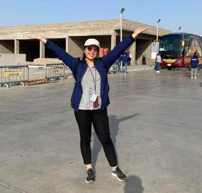

Kathryn Salangad | WDD 130
Hello! I’m Kathryn Salangad from Pampanga, the Christmas of the Philippines. I’m a proud mother to a spirited six-year-old boy and a wife to a dedicated firefighter. My passion for learning drives me to explore new ideas and perspectives, whether through a thought-provoking book or a fresh skill. I believe that growth comes from curiosity and meaningful connections. I’m excited to share my journey of continuous learning and hope to inspire others to embrace their own paths of discovery. Let’s connect and explore new horizons together!